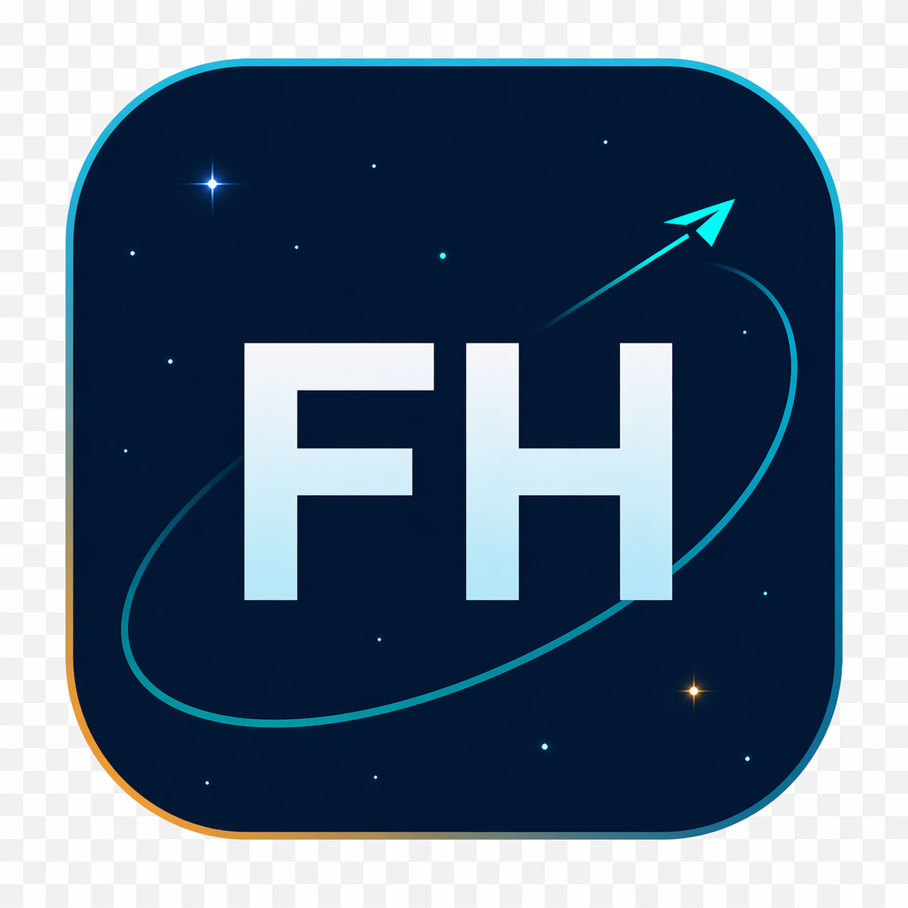
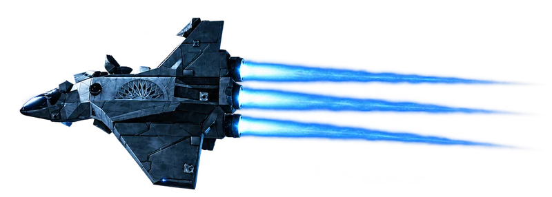

FLAtlas Modding Suite
v0.9.0v0.9.0 Beta veröffentlicht
Systeme in 2D und 3D bauen, Handelsrouten simulieren und Infokarten, NPCs und Übersetzungen bearbeiten.
Entwicklung läuft · 83 %

Flathack
Erkunde den Sirius-Sektor, plane deinen nächsten Handelsflug und entwickle eigene Mods mit FLAtlas.
Sternenkarte öffnenSysteme, Sprungtore und Basen auf der Sternenkarte finden.
Warenpreise vergleichen und profitable Handelsrouten planen.
Panzerung, Frachtraum, Preis und Händler vergleichen.
Waffen, Schilde und Ausrüstung mit ihren Verkaufsorten finden.
Fraktionen wählen und den Weg zum gewünschten Ruf berechnen.
Den 2D-Prototyp mit NPC-Verkehr und Handel im Browser spielen.
v0.9.0 Beta veröffentlicht
Systeme in 2D und 3D bauen, Handelsrouten simulieren und Infokarten, NPCs und Übersetzungen bearbeiten.
Entwicklung läuft · 83 %
Beta
Schiff und Ruf in Einzelspieler-Spielständen bearbeiten. Der Editor prüft Änderungen und legt Backups an.
Entwicklungsstand · 100 %
Beta
Mehrere Freelancer-Installationen verwalten und direkt mit der gewünschten Mod starten.
Entwicklungsstand · 100 %
Veraltet
Früherer Übersetzungseditor für Freelancer. Die Übersetzungsfunktionen werden in FLAtlas weiterentwickelt.
Letzter Entwicklungsstand · 100 %